- 5. Connaissances Intermédiaire -
Le graphique est un élément clé pour connaître l’état d’une crypto-monnaie et du marché en général il est donc primordial de savoir le lire, le comprendre et en tirer quelques informations. Commençons donc par cela !
5.1 Trading view
Trading view est le logiciel le plus utilisé et très pratique pour voir le cours des crypto-monnaies, de la bourse, et de plein d’actifs en général. Il est disponible depuis cette page web : tradingview.com et à télécharger et installer directement sur son pc ici : tradingview.com/desktop.
Nous allons apprendre pas à pas comment utiliser cette application très pratique, pas de panique si vous êtes un peu perdu au début, une fois en place c’est un outil vraiment simple d’utilisation. Grâce à Trading view vous allez pouvoir chercher, garder en favoris et examiner les actifs qui vous intéressent. Il existe en version Premium (payante) mais tout ce que nous verrons sur ce site est utilisable en version gratuite.
Pour pouvoir l’utiliser vous devrez créer un compte, pour ce faire allez sur la page web cité ci-dessus et cliquez sur “Commencer” en haut à gauche, puis à nouveau sur “Commencer” au milieu de la page, choisissez l’option que vous préférez, une connexion rapide avec votre compte google, facebook etc… ou une création normale en cliquant sur “courrier électronique”. Une fois terminé, installez Trading view sur votre PC grâce au lien cité ci-dessus et connectez vous à votre compte.
Pour le tuto nous utiliserons la version bureau de l'application et non la version web et nous allons aller chercher et examiner la paire Bitcoin / Euro :
En haut à gauche de la page cliquez dans la zone de recherche, cette fenêtre va s'ouvrir :
Comme sur un exchange on va entrer notre paire en abréviation BTCEUR, une liste va apparaître pour nous donner toutes les sources où est référencé cette paire. Si vous utilisez Binance choisissez cette ligne.
Pour l’avoir dans votre liste de favoris, ce qui est vraiment très pratique si vous allez la consulter souvent, tout à gauche de la ligne se trouve une sorte de petit drapeau gris cliquez dessus et choisissez la couleur rouge (seule couleur disponible en version gratuite). Puis cliquez sur la ligne pour accéder au graphique.
Dans le haut de la colonne de droite sur votre écran remplacez la liste de surveillance (option par défaut) par liste rouge pour voir d’un coup d'œil et avoir accès à vos actifs enregistrés.
Voilà, votre Trading view est maintenant configuré et à l’avenir il apparaîtra comme cela quand vous ouvrirez l’application depuis votre bureau
5.2 Lire un chandelier japonais
Par défaut la graphique va s’afficher avec un chandelier japonais, et devrais ressembler à cela :
Le chandelier japonais va nous permettre de voir les variations de prix dans une période de temps donnée. En l'occurrence si vous n’y avez pas encore touché la période de temps devrait être réglée sur “D” comme day (jour en Francais). Donc chacune des barres verticales représente la variation du prix d’une journée. On peut changer la valeur de temps des barres en appuyant sur le bouton montré sur l’image. Vous pouvez choisir 1 heure; 1 jour, 1 semaine, 1 mois mais pour l’instant restons en journalier.
Comment lire ces bougie :
Dans le cas d’une bougie verte, le prix du début de journée (prix d’ouverture) se situe en bas du corp de la bougie et le prix de fin de journée (prix de clôture) se situe en haut du corp de la bougie. La bougie est verte car le prix de fermeture est plus haut que le prix d’ouverture.
Dans le cas d’une bougie rouge, c’est l’inverse, l’ouverture est en haut du corps et la clôture en bas car le prix à baissé pendant la journée.
Les parties fines au-dessus et en dessous du corps sont appelées des mèches, elles représentent le point haut et le point bas de la variation du prix pendant la journée.
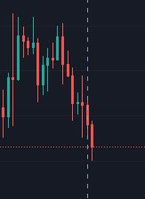
En plaçant votre curseur sur une bougie en particulier, les infos la concernant apparaissent en haut à gauche du graphique. La bougie sélectionnée est celle du 11 mai 2023 et dans l’ordre on peut voir :
O (prix d’ouverture) : 25241.01€
H (prix le plus haut atteint dans la journée) : 25337.22€
B (prix le plus bas atteint dans la journée) : 24555€
C (prix de clôture) : 24798.99€
La différence de prix entre ouverture et fermeture -442.04€
Ce que cela représente en pourcentage : -1.75% par rapport au prix d’ouverture.
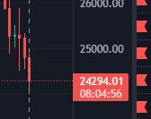
Mais ce qu’on regardera le plus souvent c’est la bougie du jour, on peut donc voir qu’actuellement le prix du BTC est de 24294.01€ et qu’aujourd’hui le BTC à perdu 2.04% pour l’instant.
Le timer sous le prix est le temps qu’il reste avant la clôture journalière et qu'une nouvelle bougie commence. Celui-ci est fixé sur le fuseau horaire (UTC) pour la France on est soit en H+1 soit en H+2 en fonction des heures d’été ou d’hiver.
En dézoomant on peut donc facilement lire les points haut et point bas qu’à fait le Bitcoin au fil du temps. La date de l’endroit où est positionné le pointeur étant inscrite en bas sur l’axe horizontal et le prix à droite sur l’axe vertical.
5.3 La barre d’outil
Vous pouvez voir sur la gauche de l’écran une barre d’outil vertical, découvrons les trois outils les plus simples et les plus utilisés :
Le rectangle
Cliquez sur le petit " < " à côté du pinceau pour ouvrir toutes les variantes de l’outil et accéder au rectangle.
Le rectangle sert à mettre en évidence une zone horizontale. Une fois tracée ou quand vous recliquez dessus, une barre de réglages s'ouvre vous permettant de modifier l’épaisseur et la couleur des contours, la couleur et la transparence du fond, de rajouter du texte etc…
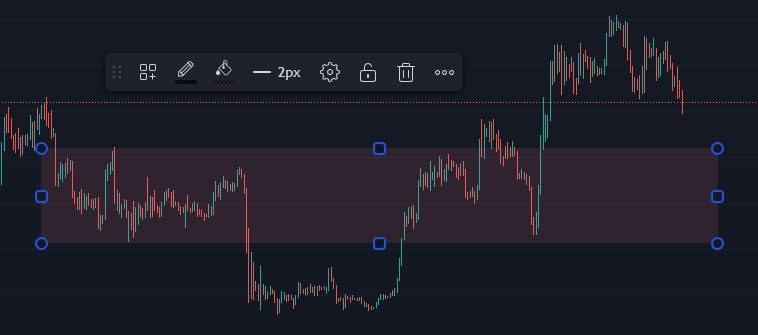
La ligne horizontale et le rayon horizontal
Ils permettent de mettre en évidence des structures horizontales.
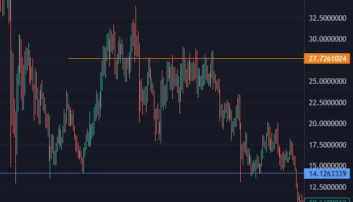
La droite de tendance
La droite de tendance sert à mettre en évidence des structures, elle peut se mettre dans tous les sens ce qui la rend très pratique. On peut la cloner et déplacer le clone créé pour tracer un canal parallèle en faisant un clic droit dessus.
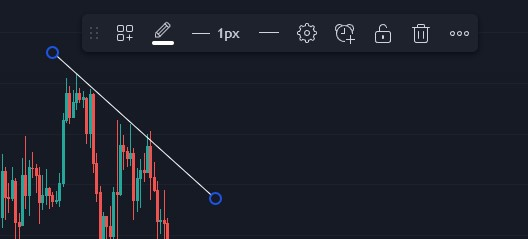
L’analyse technique : c’est l’ensemble des méthodes consistant à analyser les données d’un graphique et de différents indicateurs pour en obtenir des informations plus poussées.
Et pour les personnes les plus expérimentées essayer d’en tirer des prévisions pour le futur.
L’analyse se fait généralement sur les monnaies adossées au dollar Américain car c’est elle qui représente les plus gros volumes. Ce sera donc le cas pour tous les exemples de graphiques ci-dessous.
5.4 Support et résistance
La plus connues des structure graphique est le support / résistance, voici ses deux variantes :
La zone de support / résistance :
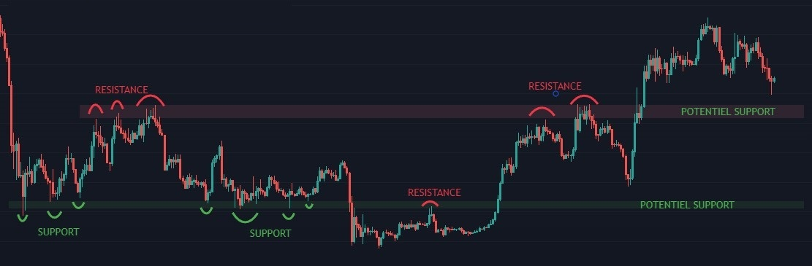 Paire: BTC/USD (Bitcoin / Dollar américain)Voici deux exemples :
La première, mise en évidence avec un rectangle vert, nous montre une zone qui à servi de support à 7 reprises avant d’être cassée. Un support qui se fait franchir à de forte probabilité de devenir une résistance et c’est en effet ce qui s’est passé car quelques semaines plus tard ce support est devenu résistance et à fait rebondir le prix dans l’autre sens avant d'être à nouveau cassé. Maintenant que le prix est repassé au dessus il est probable (mais pas sûr) que, si le prix redescendai jusqu’à cette zone, elle serve à nouveau de support.
La deuxième, mise en évidence avec un rectangle rouge, nous montre une zone qui à servi de support 5 fois avant d’être cassée. Maintenant elle est devenue un potentiel support.
Plus il y a de points qui mettent en évidence une structure, plus cette dernière peut être prise au sérieux et à des chances de fonctionner. Mais attention aux mauvaises surprises, cela ne reste que des probabilités et ce qui est sûr dans les marchés c’est qu’on est jamais sûr de rien !
La ligne de support / résistance :
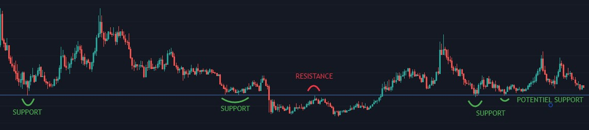 Paire: ICP/USD (Internet Computer / Dollar américain)Voici un exemple de ligne de support / résistance, moins présente dans les crypto-monnaies que sur les marchés boursiers, on peut tout de même la rencontrer, elle fonctionne de la même manière que la zone.
5.5 Les structures graphiques
Il existe un grand nombre de figures que l’on peut mettre en évidence dans un graphique, ces analyses sont très avancées et ne sont pas à la portée de tous.
Néanmoins si par curiosité vous voulez en savoir plus, allez voir les Figures Chartistes.
5.6 Les indicateurs techniques
Les indicateurs sont des informations supplémentaires que vous pouvez rajouter au graphique pour mieux le comprendre. Voyons-en quelques-uns :
Avec la version gratuite de Trading view vous pouvez afficher jusqu’à trois indicateurs en même temps mais pas plus.
Ajoutez des indicateurs à Trading View en cliquant sur “Indicateurs” en haut à gauche de l’écran.
Entrez le nom de l’indicateur souhaité, en l'occurrence celui de notre premier exemple “Volume” et choisissez celui que vous voulez dans la liste.
En cochant la petite étoile à gauche du nom de l’indicateur, vous l’ajouterez à vos favoris.
L’indicateur va apparaître sur votre graphique et sa barre de réglages apparaît soit en haut à gauche, comme sur l’image ci-contre, soit en bas à gauche. Cette barre vous permet de rendre apparent ou de cacher l’indicateur en cliquant sur le petit œil, de régler les paramètres de l’indicateur ainsi que sa couleur etc.. grâce à la petite roue crantée et de supprimer l’indicateur avec la croix.
Les volumes
L’indicateur volume va vous donner le montant des transactions effectué (achat+ventes) sur la paire choisie, la plateforme choisie et la durée de temps choisie. C’est un peu flou dit comme ça, mais imageons pour mieux comprendre.
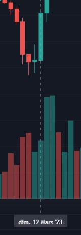
Si vous choisissez sur trading view la paire BTC/USD avec la source Binance et que vous affichez votre graphique en journalier (une bougie = une journée).
Alors, grâce au chiffre affiché à côté de la barre de réglage et en positionnant votre curseur sur une journée en particulier, on peut voir que le 12 mars 2023 sur Binance il s’est échangé pour 4465000$ de Bitcoin. Et comme la barre est verte il y a eu plus d'achat que de vente.
Si on regarde les volumes dans leur intégralité, on peut voir si les montants échangés sont forts ou non, par exemple au moment où ces lignes sont écrites les volumes sont faibles sur Bitcoin.
Le RSI
Le RSI indique le surachat ou la survente d’un actif. Il se présente sous la forme d’un graphique allant de 0 à 100.
Atteindre les 70 met en évidence une zone de surachat et nous indique une potentielle fin de hausse.
Atteindre les 30 met en évidence une zone de survente et nous indique une potentielle fin de baisse.
Le RSI est plus pertinent utilisé avec un graphique en “weekly” (1 bougie = 1 semaine).
Si la courbe jaune des moyennes dans le graphique vous gène, pour la retirer allez dans la barre de réglage de l’indicateur, cliquez sur la roue crantée, allez dans l’onglet style et décochez “RSI-based MA”, puis “D’accord” en bas à droite.
Le volume profile
Volume Profile nous montre aussi les volumes de transaction (comme Volume plus haut) mais plutôt que de nous les donner par jour ou par semaine, il nous les donne par prix.
On peut donc voir qu’il y a eu beaucoup de transaction aux alentour des 28k, des 23k, des 21k et surtout des 17k.
La barre jaune qui dépasse nous indique deux choses : le prix auquel il y a eu le plus de transaction et jusqu’ou l’indicateur regarde (200 unité de temps par défault).
Pour augmenter ou diminuer la plage à analyser, allez dans la roue crantée de la barre de réglage de votre indicateur, dans l’onglet “Paramètre et entrée” et modifiez le nombre dans “Volume Lookback Depth”. Vous pouvez aussi cacher la barre jaune en cliquant sur le carré à côté de “POC Color” et en reglant la transparence sur 0%.
5.7 Le Bull / Bear market.
En anglais bull veut dire taureau et bear veut dire ours*
On parle de bull et de bear market pour désigner les périodes de hausse et les périodes de baisse généralisées des marchés. Le bull market désignant un marché haussier, vous entendrez aussi dire “bullish” et le bear market désignant un marché baissier, vous entendrez aussi dire “bearish”.
Dans le cas des crypto-monnaies et plus principalement de Bitcoin car il est le métronome qui donne le ton à l’ensemble de l’écosystème. C’est son le halving day (qui tombe tous les 4 ans) qui est le principal déclencheur des bull et bear market.
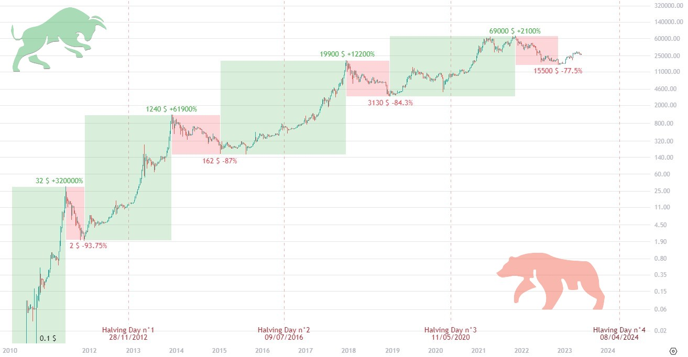
On entend donc souvent parler des cycles du Bitcoin. Mais une théorie que beaucoup de gens partagent est que le BTC va casser son cycle et entrer dans une phase de montée permanente plus douce, plus progressive, dans laquelle il y aura toujours des baisses de prix bien sûr, mais moins agressive et sans réel bear market. A voir ce que l'avenir nous réserve.
5.8 Le Max Pain Price
Sans trop rentrer dans les détails, sachez qu’il existe un produit dérivé appelé option, celui ci est très très peut utiliser par des particulier ayant un capital modeste donc pas la peine de s’y attarder mais ces options permettent de parier à l’avance sur le prix d’un actif (y compris BTC). A la date de clôture, on gagne de l’argent si on a eu juste et on en perd si on s’est trompé. Il y a des clôtures d’options chaque jours hors week-end, mais la plus importante, celle qui charrie les plus gros montants, c’est celle du dernier vendredi du mois.
Le Max Pain Price (prix de douleur maximum) c’est le prix qui, s’il est atteint, ferait perdre le plus d’argent au plus de gens. Et le marché, cherchant toujours la liquidité, à tendance à tirer vers ce prix les jours précédant la clôture mensuelle.
Par exemple: si le dernier vendredi du mois tombe un 28 avec un MPP de 30000$ et que nous sommes le 25 avec un prix du BTC est de 33k alors le prix aura tendance à descendre sous l'influence du MPP.
Pour voir les options et le prix du MPP il exista plusieurs site mais en voilà un : metrics.deribit.com
Survolez avec votre souris l’onglet “Options” tout en haut à gauche et cliquez sur Bitcoin puis en haut à droite de l’écran cliquez sur “All expirations” et choisissez la dernière date du mois en cours.
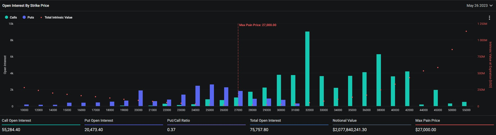
On peut voir ci-dessus que pour la clôture du 26 mai 2023 le MPP du BTC est de 27000$.
“Notional value” nous indique que 2 milliard de dollars ont été pariès et si on descend un peut dans la page, dans “Open Interest By Expiration” on voit que 1.5 milliard sont des Calls (des paris à la hausse) et seulement 500 millions sont des Puts (des paris à la baisse). Ce qui nous indique que les parieurs sont plutôt optimistes pour une montée des prix.
5.9 Les sites à connaître
Coinmarketcap.com
Coinmarketcap.com est le site n°1 quand vous cherchez des infos sur une crypto-monnaie.
Par défaut sur la page principale vous allez retrouver le top 100 des crypto-monnaies classé selon leurs capitalisation.
Rappel : Capitalisation = nombre de tokens en circulation x prix du token
Pour chaque monnaie dans l’ordre on vas avoir :
- - Sa place dans le classement
- - Son nom et son abréviation
- - Son cours actuel
- - La variation, de son prix sur 1 heure, 1 jour, 1 semaine
- - Sa capitulation
- - Le volume de transaction sur les 24 dernière heure
- - le nombre de tokens en circulation
- - Un visuel de l’évolution du prix sur les 7 derniers jours.
Vous pouvez changer la langue et la devise dans laquelle les prix sont affichés en haut à droite de la page.
Si maintenant vous cliquez sur une monnaie en particulier ou si vous la recherchez dans la barre de recherche en haut à droite vous allez avoir accès à plus d’informations.
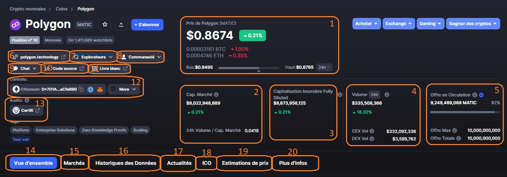- Le cours actuel du token, son équivalence en BTC et ETH et sa variation de prix de la journée.
- Sa capitalisation.
- Sa capitalisation Fully Diluted : La capitalisation si tous les tokens étaient créés et en circulation, dans le cas du MATIC comme seulement 92% des tokens ont été émis( voir n°5), coinmarketcap ajoute les 8% restants.
- Le volume de transaction sur 24h et le pourcentage effectué sur des plateformes centralisées et décentralisées.
- Le nombre et le pourcentage de tokens en circulation ainsi que le nombre total de tokens une fois les 100% distribués.
- Le site web de la monnaie.
- Les différents explorateurs sur lesquels on peut retrouver la liste des transactions faites sur la blockchain.
- Les différents médias ou l'équipe du projet donne des infos.
- Des chats qui permettent d’échanger avec l’équipe du projet.
- Le github du projet (non compréhensible par le commun des mortels).
- Le white paper : document officiel qui présente le projet, son utilité, sa technologie, ce qu’il compte mettre en place, les solutions qu’il propose etc….
- Les n° de contrat du tokens sur les différentes blockchain sur lesquelles il est présent.
- L’audit réalisé par une entreprise indépendante, examinant le sérieux, la solidité, la sécurité du projet.
- Le graphique du token et quelques infos du moment sur le projet.
- La liste des plateformes sur lesquelles vous pouvez échanger le token, les paires, volumes etc…
- L’historique de prix du token jusqu’à 1 an dans le passé.
- L’actualité autour du projet.
- Des infos sur l’ICO du projet.
- Un endroit où l'on peut donner son estimation du prix du token dans l’avenir.
- Quelques infos comme le nombre d’adresse possédant le token, les plug gros détenteurs etc….
Cryptobubbles.net
Cryptobubbles.net est vraiment très pratique pour visualiser en un instant ce qui se passe sur le marché grâce à son design bien pensé. Par défaut vous allez voir les variations de prix du top 100 des crypto-monnaies sur 24h.
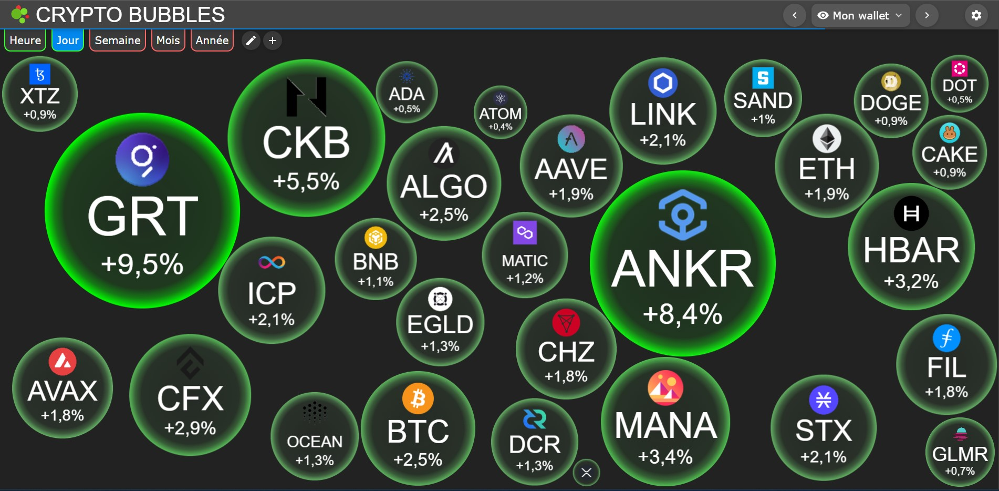
Vous pouvez personnaliser la page d’accueil en y mettant comme sur l’image ci-dessus les monnaies que vous détenez dans vos wallets, pour cela cliquez sur la roue crantée en haut à droite, renommez la liste de surveillance qui s’appelle “liste de surveillance 1”. Vous pouvez en créer autant que vous voulez en cliquant sur le +.
Ensuite cherchez vos monnaies dans la liste du dessous ou avec la barre de recherche, cliquez sur le + à gauche du nom du token puis sur la liste de surveillance que vous aurez créée pour constituer votre page personnalisée.
Vous pouvez naviguer entre les différentes listes par défaut ou personnalisée grâce au bouton en haut à droite.
Vous pouvez aussi changer la temporalité en haut à gauche et d’autres choses encore. Explorez pour découvrir.
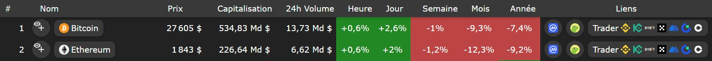
En faisant rouler la souris vers le bas vous trouverez la liste des monnaies affichées dans les bulles au-dessus (un peut comme sur coinmarketcap) avec leur position, nom, prix, capitalisation, volumes, variation de prix.
Mais en plus de cela vous aurez des liens : les deux premiers menant vers la page coinmarketcap et coingeko du token en question et les suivant vers les plateformes qui permettent d’échanger ce token.